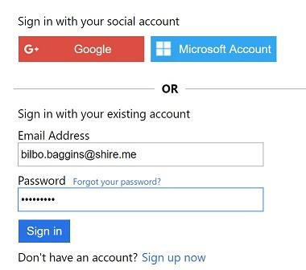

At the most basic level TrackIt tracks categorized numeric data by date. A typical example might be daily precipitation in inches.
The Why Behind the What
I enjoy exploratory programming. Every couple of years I settle on a concept for an application which will allow me to explore some set of technologies synergistically and in depth. TrackIt is the latest (2017) of these exploratory applications. The requirements were simple enough that I could write components quickly yet complex enough to be functionally useful and offer challenges along the way. Additionally, I explored an architecture in which client, service and data store technologies would act like Lego blocks (metaphor borrowed from Scott Hanselman) allowing me to seamlessly interchange implementations. I've been quite satisfied with the results of all these explorations.Video Walkthrough
I've created a short (~8 minute) Video Walkthrough highlighting some of TrakIt's capabilities.Test Drive TrackIt with Bilbo
Use of TrackIt requires authentication. TrackIt utilizes Azure Active Directory B2C as its authentication provider. If you go to Sign In you'll be presented with default B2C sign in UI. The Bilbo test-drive account shown can be used to access periodically refreshed sample data and all available features.

Sign In Options
- Sign in with Bilbo's test-drive account (shown).
- Email address: bilbo.baggins@shire.me
- Password: 4TheShire
- Sign in with Google
- Sign in with Microsoft Account
- Sign up now
YouTube Video
My Explorations
Some of the technologies I explored in the creation of TrackIt.- .NET Standard
- .NET Core
- ASP.NET Core
- Angular
- Aurelia
- WebPack 2
- Bootstrap 4
- Pure CSS
- Azure DocumentDB
- Entity Framework Core
- Dapper
- Azure Active Directory B2C
- xUnit
- NSubstitute